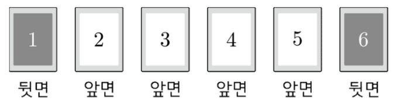

홀수 눈은 ㉡에 따라 그 수 이하, 짝수 눈은 ㉢에 따라 그 수 이상을 뒤집으니까, 눈마다 뒤집히는 카드부터 적어 두자.
주사위를 던진 회차까지 구별해서 나열하면 모든 나열이 같은 정도로 일어나. 그래서 분자도 이 순서 있는 나열로 세야 해.
카드는 홀수 번 뒤집히면 면이 바뀌고, 짝수 번이면 처음 면 그대로야. 뒷면인 1, 6은 홀수 번, 앞면인 2~5는 짝수 번 뒤집혀야 해. 각 카드를 뒤집는 눈은 위의 눈별 카드에서 읽은 거야.
판단카드 1, 6 조건에서 두 괄호가 모두 홀수이고 합이 4니까 홀수 눈의 횟수는 1 아니면 3이야. 이걸로 (I), (II)를 나누면 빠짐없고 겹치지 않아.
(I)은 홀수 눈이 딱 한 번이라 나온 홀수 눈이 1, 3, 5 중 무엇인지로 다시 나눠. 는 짝수이고 3보다 클 수 없어서 0 또는 2야.
주의같은 눈이 겹치면 같은 것이 있는 순열로 세야 해. 예를 들어 1, 6, 6, 6을 나열하면 이야. 분모가 순서 있는 나열이니까 분자도 순서를 넣어 세는 거지.
이 짝수라 는 홀수, 그러면 가 짝수라 도 홀수야. 둘 다 1 이상인데 합이 3을 넘을 수 없어.
이 짝수라 는 홀수, 이 짝수라 는 짝수야. 가 1이면 는 0 또는 2, 가 3이면 나머지는 0이라서 이 세 가지가 전부야.
판단처음 적은 눈별 카드를 나란히 보면 눈 와 눈 가 뒤집는 카드는 번호를 7에서 뺀 관계야(눈 3의 1, 2, 3과 눈 4의 6, 5, 4). 그래서 네 번의 눈을 모두 바꾸면 카드마다 뒤집힌 횟수가 맞은편 카드로 옮겨 가. 카드 1과 6, 카드 2~5의 홀짝 조건은 이 맞바꿈에도 그대로라서 (I)의 나열과 (II)의 나열이 하나씩 짝지어져.
(I)과 (II)는 홀수 눈의 횟수가 달라서 겹치지 않아. 마지막 세 줄은 (I)에서 센 나열 하나를 카드 조건식에 넣어 본 거야. 카드 1, 6은 홀수 번, 카드 2~5는 짝수 번이라 ㉠의 처음 상태에서 ㉤처럼 모두 앞면이 돼.